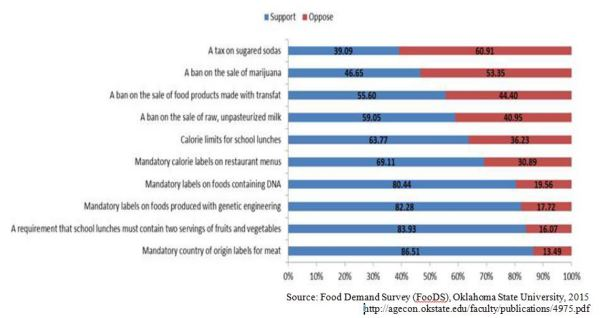

2015-01-19 22:47:00
在我討論今天的主題之前，請讀者先回答一則民意調查的問題，這來自由奥克拉荷馬州立大學農業經濟系（Oklahoma State University Department of Agricultural Economics）草擬的一份問卷（原報告於2015年一月15日刊在該大學Jayson Lusk教授的網頁上：http://jaysonlusk.com/blog/2015/1/15/food-demand-survey-foods-january-2015）：
WARNING: This product contains deoxyribonucleic acid (DNA). The Surgeon General has determined that DNA is linked to a variety of diseases in both animals and humans. In some configurations, it is a risk factor for cancer and heart disease. Pregnant women are at very high risk of passing on DNA to their children.
Should the government impose mandatory labeling such as the one above on foods containing DNA? Why?
警告：本產品含有deoxyribonucleic acid（DNA）。公共衛生部已確定DNA與各種各樣的動物和人類的疾病有密切的關係。在許多情况下，它是癌症和心臟疾病的重要危險因素。孕婦傳遞DNA給子女的風險極高。
政府是否應該強制含有DNA的食品加貼上列的標籤？請解釋你的理由？
|
|
|
好了，回答過了嗎？如果你的答案是肯定的，恭喜恭喜，你和80.44%的美國民眾意見相同，假如這是一場選舉，你將獲得壓倒性的勝利。現在請先到wikipedia察看有關DNA的介紹。如果你的答案是否定的，你在選舉裡只有19.56%的票，輸到連褲子都没了，不過不要氣餒，請繼續讀下去。

原版的問卷調查結果。如果讀者看不清楚，第一段所列的那個網頁有較大的圖片。支持DNA警告標籤的有80.44%，而支持餐館標出食物所含熱量的只有69.11%，支持標示轉基因食品的則有82.28%。既然80.44%的百姓連最基本的食物成份都會要求放警告標籤，那麼他們對轉基因食品的同様要求就没有意義。把這些票排除之後，支持標示轉基因食品的“知情”民眾只有（82.28-80.44）/（100-80.44）=9.41%，反對的則有90.56%。所以簡單的“民主選舉”其實常常產生反民主的結果。
當然，從科學的角度來看，deoxyribonucleic acid（脫氧核糖核酸）是體現基因的化學分子，所有的動植物體内都含有大量的DNA，因此如果真要强加標籤，那麼超級市場裡的東西，除了精煉的糖和鹽之類，基本上都會被含括。而且上列的警告標籤雖然乍聽之下十分聳動，實際上卻完全是廢話，DNA做為食物，當然是和開水一様地安全。
我舉這個例子，是為了提醒讀者，民主是個缺陷很多很大的制度，即使100%的百姓都是善良有公德的公民，也仍然會受專門知識不足的限制和人類心理偏好的影響。在現實社會裡，自私或有仇恨惡念的選民再加上有心人對媒體報導的操弄，民主制度的缺陷會被放大幾百倍。科學原本是追求事實真相的學術，但是連高能物理在失去新實験結果40年後，互相選舉的論文審查制度一様把整個專業帶進了超弦的死胡同裡。所以我鼓勵有知識有能力的讀者，多做獨立的思考，多讀不同的意見，追求真相只有邏輯和實験是可靠的準繩，多數人、權威、大眾媒體等等都是非常不穩妥的依據。